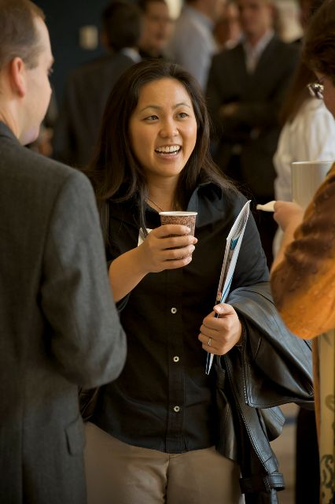

Setha Yim
(858) 334-5221
230 N. Bayview Ave, Sunnyvale, CA, 94086
setha.yim@gmail.com
http://www.linkedin.com/in/sethayim
Education
M.S. Materials Engineering San Jose State University 2008
B.S. Electrical Engineering University of California San Diego 2005
Technical Skills/Qualifications • Expert in material characterization tools such as Auger Electron Spectroscopy (AES), X-ray Photoelectron Spectroscopy (XPS), Atomic Force Microscopy (AFM), Scanning Electron Microscopy (SEM), Electron Dispersive Spectroscopy (EDS), and Raman Spectroscopy. • Experienced in semiconductor fabrication processes, having first hand skills in using lithography tools such as photolithography aligners (OAI Hybralign series 200), and resist spin coaters (Laurel Tech. Corp., Model WS-400A-6NPP/Lite). • Experienced in Electron Backscatter X-rays (EBSD), Fourier Transform Infrared Spectroscopy (FTIR), ultraviolet and visible spectroscopy (UV-VIS), Particle Size Analyzer (Mastersizer 3000) and analysis of powders: He Pycnometer (Accupyc II) and Brauner Emmett and Teller (BET) surface area (Tristar II). • Familiar with statistical tools and concepts such as ANOVA and DOE methods.